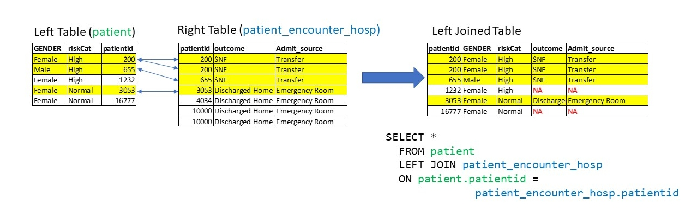

Loading required package: DBI
3 Week 2: JOINs, More WHERE, Boolean Logic, ORDER BY
3.1 Connecting to our database
Let’s connect to our database.
3.2 Table References
In single table queries, it is usually unambiguous to the query engine which column and which table you need to query.
However, when you involve multiple tables, it is important to know how to refer to a column in a specific table.
For example, the procedure_occurrence table has a person_id column as well. If we want to use this specific column in this table, we can use the . (dot) notation:
procedure_occurrence.person_idIf we wanted the person_id column in person we can use this:
person.person_idThis will become much more important as we get into JOINing tables.
3.2.1 Check on Learning
Add table references to the WHERE part of the query:
SELECT *
FROM procedure_occurrence
WHERE person_id = 13.3 Aliases
As your queries get more complex, and as you involve more and more tables, you will need to use aliases. I think of them like “nicknames” - they can save you a lot of typing.
I tend to use the AS clause when I define them. I’ve used AS here to abbreviate person. I use it in two different places: in my COUNT, and in my WHERE:
SELECT COUNT(p.person_id)
FROM person AS p
WHERE p.year_of_birth < 2000;| count(p.person_id) |
|---|
| 2694 |
Some people don’t use AS, just putting the aliases next to the original name:
SELECT COUNT(p.person_id)
FROM person p
WHERE p.year_of_birth < 2000;| count(p.person_id) |
|---|
| 2694 |
We can also rename variables using AS:
SELECT COUNT(person_id) AS person_count
FROM person
WHERE year_of_birth < 2000;| person_count |
|---|
| 2694 |
Now that we are going to use JOINs, we will be using aliases and table references a lot.
3.4 JOIN
We use the JOIN clause when we want to combine information from two tables. Here we are going to combine information from two tables: procedure_occurrence and concept.
To set the stage, let’s show two tables, x and y. We want to join them by the keys, which are represented by colored boxes in both of the tables.
Note that table x has a key (“3”) that isn’t in table y, and that table y has a key (“4”) that isn’t in table x.

We are going to explore INNER JOIN first. In an INNER JOIN, we match up our primary key for our table on the foreign key for another table. In this case, we only retain rows that have keys that exist in both the x and y tables. We drop all rows that don’t have matches in both tables.
 There are other types of joins when we want to retain information from the
There are other types of joins when we want to retain information from the x table or the y table, or both.
3.5 INNER JOIN syntax
Here’s an example where we are joining procedure_occurrence with concept:
SELECT procedure_occurrence.person_id, concept.concept_name
FROM procedure_occurrence
INNER JOIN concept
ON procedure_occurrence.procedure_concept_id = concept.concept_id| person_id | concept_name |
|---|---|
| 343 | Subcutaneous immunotherapy |
| 357 | Subcutaneous immunotherapy |
| 399 | Subcutaneous immunotherapy |
| 406 | Subcutaneous immunotherapy |
| 411 | Subcutaneous immunotherapy |
| 430 | Plain X-ray of clavicle |
| 442 | Subcutaneous immunotherapy |
| 453 | Cognitive and behavioral therapy |
| 469 | Cognitive and behavioral therapy |
| 488 | Sputum examination |
What’s going on here? The magic happens with this clause, which we use to specify the two tables we need to join.
FROM procedure_occurrence
INNER JOIN conceptThe last thing to note is the ON statement. These are the conditions by which we merge rows. Note we are taking one column in procedure.occurrence, the procedure_concept_id, and matching the rows up with those rows in concept
ON procedure_occurrence.procedure_concept_id = concept.concept_idSELECT procedure_occurrence.person_id, concept.concept_name
FROM procedure_occurrence
INNER JOIN concept
ON procedure_occurrence.procedure_concept_id = concept.concept_id| person_id | concept_name |
|---|---|
| 343 | Subcutaneous immunotherapy |
| 357 | Subcutaneous immunotherapy |
| 399 | Subcutaneous immunotherapy |
| 406 | Subcutaneous immunotherapy |
| 411 | Subcutaneous immunotherapy |
| 430 | Plain X-ray of clavicle |
| 442 | Subcutaneous immunotherapy |
| 453 | Cognitive and behavioral therapy |
| 469 | Cognitive and behavioral therapy |
| 488 | Sputum examination |
Here is the same query using aliases. We use po as an alias for procedure_occurrence and c as an alias for concept. You can see it is a little more compact.
SELECT po.person_id, c.concept_name
FROM procedure_occurrence as po
INNER JOIN concept as c
ON po.procedure_concept_id = c.concept_id;
3.6 LEFT JOIN
Jargon alert
The table to the left of the JOIN clause is called the left table, and the table to the right of the JOIN clause is known as the right table. This will become more important as we explore the different join types.
FROM procedure_occurrence INNER JOIN concept
^^Left Table ^^Right TableWhat if we want to retain all of the rows in the procedure_occurrence table, even if there are no matches in the concept table? We can use a LEFT JOIN to do that.

If a row exists in the left table, but not the right table, it will be replicated in the joined table, but have rows with NULL columns from the right table.
I tried to find some examples where LEFT JOINed tables were different than INNER JOINed tables, but couldn’t find one good example in our tables. Here is another example:
 Nevertheless, here is an example of a LEFT JOIN:
SELECT c.concept_name, po.person_id, c.domain_id
FROM concept as c
LEFT JOIN procedure_occurrence AS po
ON po.procedure_concept_id = c.concept_id
WHERE c.domain_id = 'Procedure'| concept_name | person_id | domain_id |
|---|---|---|
| Subcutaneous immunotherapy | 343 | Procedure |
| Subcutaneous immunotherapy | 357 | Procedure |
| Subcutaneous immunotherapy | 399 | Procedure |
| Subcutaneous immunotherapy | 406 | Procedure |
| Subcutaneous immunotherapy | 411 | Procedure |
| Plain X-ray of clavicle | 430 | Procedure |
| Subcutaneous immunotherapy | 442 | Procedure |
| Cognitive and behavioral therapy | 453 | Procedure |
| Cognitive and behavioral therapy | 469 | Procedure |
| Sputum examination | 488 | Procedure |
3.7 Other kinds of JOINs
- The
RIGHT JOINis identical toLEFT JOIN, except that the rows preserved are from the right table. - The
FULL JOINretains all rows in both tables, regardless if there is a key match. -
ANTI JOINis helpful to find all of the keys that are in the left table, but not the right table
3.8 Multiple JOINs with Multiple Tables
We can have multiple joins by thinking them as a sequential operation of one join after another. In the below query we first INNER JOIN person and procedure_occurrence, and then use the output of that JOIN to INNER JOIN with concept:
SELECT p.gender_source_value, c.concept_name, po.procedure_date
FROM person AS p
INNER JOIN procedure_occurrence AS po
ON p.person_id = po.person_id
INNER JOIN concept AS c
ON po.procedure_concept_id = c.concept_id
LIMIT 10;| gender_source_value | concept_name | procedure_date |
|---|---|---|
| F | Subcutaneous immunotherapy | 1992-02-01 |
| F | Subcutaneous immunotherapy | 1990-11-14 |
| M | Subcutaneous immunotherapy | 1991-09-08 |
| M | Subcutaneous immunotherapy | 1990-02-13 |
| M | Subcutaneous immunotherapy | 1992-01-11 |
| F | Plain X-ray of clavicle | 1938-10-11 |
| F | Subcutaneous immunotherapy | 1992-10-31 |
| M | Cognitive and behavioral therapy | 1984-03-20 |
| F | Cognitive and behavioral therapy | 1948-04-26 |
| M | Sputum examination | 1962-09-21 |
The way I think of these multi-table joins is to decompose them into two joins:
- We first
INNER JOINpersonandprocedure_occurrence, to produce an output table - We take this output table and
INNER JOINit withconcept.
Notice that both of these JOINs have separate ON statements. For the first join, we have:
INNER JOIN procedure_occurrence AS po
ON p.person_id = po.person_idFor the second JOIN, we have:
INNER JOIN concept AS c
ON po.procedure_concept_id = c.concept_idAnd that gives us the final table, which takes variables from all three tables.
One thing to keep in mind is that JOINs are not necessarily commutative; that is, the order of joins can matter. This is because we may drop or preserve rows depending on the JOIN.
For combining INNER JOINs, we are looking for the subset of keys that exist in each table, so join order doesn’t matter. But for combining LEFT JOINs and RIGHT JOINS, order can matter.
It’s really important to check intermediate output and make sure that you are retaining the rows that you need in the final output. For example, I’d try the first join first and see that it contains the rows that I need before adding the second join.
3.9 Using JOIN with WHERE
Where we really start to cook with gas is when we combine JOIN with WHERE. Here, we’re joining procedure_occurrence and concept, with an additional WHERE where we only want those rows that have the concept_name of ’Subcutaneous immunotherapy`:
SELECT po.person_id, c.concept_name
FROM procedure_occurrence as po
INNER JOIN concept as c
ON po.procedure_concept_id = c.concept_id
WHERE c.concept_name = 'Subcutaneous immunotherapy';| person_id | concept_name |
|---|---|
| 343 | Subcutaneous immunotherapy |
| 357 | Subcutaneous immunotherapy |
| 399 | Subcutaneous immunotherapy |
| 406 | Subcutaneous immunotherapy |
| 411 | Subcutaneous immunotherapy |
| 442 | Subcutaneous immunotherapy |
| 499 | Subcutaneous immunotherapy |
| 533 | Subcutaneous immunotherapy |
| 563 | Subcutaneous immunotherapy |
| 680 | Subcutaneous immunotherapy |
Here is a triple join query with an additional filter. You can see why aliases are useful:
SELECT po.person_id, c.concept_name, p.birth_datetime
FROM procedure_occurrence as po
INNER JOIN concept as c
ON po.procedure_concept_id = c.concept_id
INNER JOIN person as p
ON po.person_id = p.person_id
WHERE p.year_of_birth < 1980;| person_id | concept_name | birth_datetime |
|---|---|---|
| 343 | Subcutaneous immunotherapy | 1970-01-31 |
| 357 | Subcutaneous immunotherapy | 1954-10-13 |
| 399 | Subcutaneous immunotherapy | 1955-04-03 |
| 406 | Subcutaneous immunotherapy | 1952-02-19 |
| 411 | Subcutaneous immunotherapy | 1959-02-21 |
| 430 | Plain X-ray of clavicle | 1931-06-20 |
| 442 | Subcutaneous immunotherapy | 1947-08-23 |
| 453 | Cognitive and behavioral therapy | 1970-05-15 |
| 469 | Cognitive and behavioral therapy | 1935-11-30 |
| 488 | Sputum examination | 1954-10-01 |
WHERE vs ON
You will see variations of SQL statements that eliminate JOIN and ON entirely, putting everything in WHERE:
SELECT po.person_id, c.concept_name
FROM procedure_occurrence as po, concept as c
WHERE c.concept_name = 'Subcutaneous immunotherapy'
AND po.procedure_concept_id = c.concept_id
LIMIT 10;| person_id | concept_name |
|---|---|
| 343 | Subcutaneous immunotherapy |
| 357 | Subcutaneous immunotherapy |
| 399 | Subcutaneous immunotherapy |
| 406 | Subcutaneous immunotherapy |
| 411 | Subcutaneous immunotherapy |
| 442 | Subcutaneous immunotherapy |
| 499 | Subcutaneous immunotherapy |
| 533 | Subcutaneous immunotherapy |
| 563 | Subcutaneous immunotherapy |
| 680 | Subcutaneous immunotherapy |
I’m not the biggest fan of this, because it is often not clear what is a filtering clause and what is a joining clause, so I prefer to use JOIN/ON with a WHERE.
3.10 Boolean Logic: AND versus OR
Revisiting WHERE, we can combine conditions with AND or OR.
AND is always going to be more restrictive than OR, because our rows must meet two conditions.
SELECT COUNT(*)
FROM person
WHERE year_of_birth < 1980
AND gender_source_value = 'M'| count_star() |
|---|
| 1261 |
On the other hand OR is more permissing than AND, because our rows must meet only one of the conditions.
SELECT COUNT(*)
FROM person
WHERE year_of_birth < 1980
OR gender_source_value = 'M'| count_star() |
|---|
| 2629 |
There is also NOT, where one condition must be true, and the other must be false.
SELECT COUNT(*)
FROM person
WHERE year_of_birth < 1980
AND NOT gender_source_value = 'M'| count_star() |
|---|
| 1308 |
3.11 ORDER BY
ORDER BY lets us sort tables by one or more columns:
SELECT po.person_id, c.concept_name, po.procedure_date
FROM procedure_occurrence as po
INNER JOIN concept as c
ON po.procedure_concept_id = c.concept_id
ORDER BY po.procedure_date;| person_id | concept_name | procedure_date |
|---|---|---|
| 2088 | Bone immobilization | 1911-09-07 |
| 2088 | Radiography of ankle | 1911-09-07 |
| 2858 | Radiography of wrist | 1912-03-11 |
| 2858 | Bone immobilization | 1912-03-11 |
| 4165 | Sputum examination | 1912-03-15 |
| 1658 | Brief general examination | 1912-04-30 |
| 1658 | Medication Reconciliation | 1912-04-30 |
| 1658 | Review of systems | 1912-04-30 |
| 4643 | Suture open wound | 1912-12-27 |
| 4643 | Sputum examination | 1913-05-27 |
We can ORDER BY multiple columns. Column order is important. Try changing the order of the columns in the query below. How is it different?
SELECT po.person_id, c.concept_name, po.procedure_date
FROM procedure_occurrence as po
INNER JOIN concept as c
ON po.procedure_concept_id = c.concept_id
ORDER BY po.person_id, po.procedure_date;| person_id | concept_name | procedure_date |
|---|---|---|
| 1 | Bone immobilization | 1958-03-11 |
| 1 | Radiography of humerus | 1958-03-11 |
| 1 | Radiologic examination of knee | 1981-08-10 |
| 1 | Surgical manipulation of joint of knee | 1981-08-17 |
| 1 | Suture open wound | 1982-09-11 |
| 2 | Bone immobilization | 1924-01-12 |
| 2 | Radiography of humerus | 1924-01-12 |
| 2 | Sputum examination | 1931-09-03 |
| 2 | Plain X-ray of clavicle | 1934-01-19 |
| 2 | Suture open wound | 1952-07-13 |
3.12 Try it OUt
Try ordering by po.patient_id:
SELECT po.person_id, c.concept_name, po.procedure_date
FROM procedure_occurrence AS po
INNER JOIN concept AS c
ON po.procedure_concept_id = c.concept_id
ORDER BY po.procedure_date;| person_id | concept_name | procedure_date |
|---|---|---|
| 2088 | Bone immobilization | 1911-09-07 |
| 2088 | Radiography of ankle | 1911-09-07 |
| 2858 | Radiography of wrist | 1912-03-11 |
| 2858 | Bone immobilization | 1912-03-11 |
| 4165 | Sputum examination | 1912-03-15 |
| 1658 | Brief general examination | 1912-04-30 |
| 1658 | Medication Reconciliation | 1912-04-30 |
| 1658 | Review of systems | 1912-04-30 |
| 4643 | Suture open wound | 1912-12-27 |
| 4643 | Sputum examination | 1913-05-27 |
3.13 Transactions and Inserting Data
So far, we’ve only queried data, but not added data to databases.
As we’ve stated before, DuckDB is an Analytical database, not a transactional one. That means it prioritizes reading from data tables rather than inserting into them. Transactional databases, on the other hand, can handle multiple inserts from multiple users at once. They are made for concurrent transactions.
Here is an example of what is called the Data Definition Language for our tables:
CREATE TABLE @cdmDatabaseSchema.PERSON (
person_id integer NOT NULL,
gender_concept_id integer NOT NULL,
year_of_birth integer NOT NULL,
month_of_birth integer NULL,
day_of_birth integer NULL,
birth_datetime TIMESTAMP NULL,
race_concept_id integer NOT NULL,
ethnicity_concept_id integer NOT NULL,
location_id integer NULL,
provider_id integer NULL,
care_site_id integer NULL,
person_source_value varchar(50) NULL,
gender_source_value varchar(50) NULL,
gender_source_concept_id integer NULL,
race_source_value varchar(50) NULL,
race_source_concept_id integer NULL,
ethnicity_source_value varchar(50) NULL,
ethnicity_source_concept_id integer NULL );When we add rows into a database, we need to be aware of the constraints of the database. They exist to maintain the integrity of a database.
We’ve encountered one constraint: database fields need to be typed. For example, id keys are usually INTEGER. Names are often VARCHAR.
One contraint is the requirement for unique keys for each row. We cannot add a new row with a previous key value.
NOT NULLUNIQUE-
PRIMARY KEY-NOT NULL+UNIQUE -
FOREIGN KEY- value must exist as a key in another table -
CHECK- check the data type and conditions. One example would be our data shouldn’t be before 1900. -
DEFAULT- default values.
The most important ones to know about are PRIMARY KEY and FOREIGN KEY. PRIMARY KEY forces the database to create new rows with an automatically incremented id.
When we create tables in our database, we need to specify which column is a PRIMARY KEY:
CREATE TABLE person (
person_id INTEGER PRIMARY KEY
)FOREIGN KEY involves two or more tables. If a column is declared a FOREIGN KEY, then that key value must exist in a REFERENCE table. Here our two reference tables are person and procedure_occurrence.
CREATE TABLE procedure_occurrence {
procedure_occurrence_id PRIMARY KEY,
person_id INTEGER REFERENCES person(person_id)
procedure_concept_id INTEGER REFERENCES concept(concept_id)
}Thus, we can use constraints to make sure that our database retains its integrity when we add rows to it.
There are more constraints we can add to our tables, and the correct use of these constraints will ensure that our data is correct.
You can see an example of constraints for our database here: https://github.com/OHDSI/CommonDataModel/blob/v5.4.0/inst/ddl/5.4/postgresql/OMOPCDM_postgresql_5.4_constraints.sql.
3.14 Always close the connection
When we’re done, it’s best to close the connection with dbDisconnect().
dbDisconnect(con)3.15 References
-
Tidyexplain - All
JOINanimations come from here. - Understanding Joins - another nice visual explanation from R for Data Science.